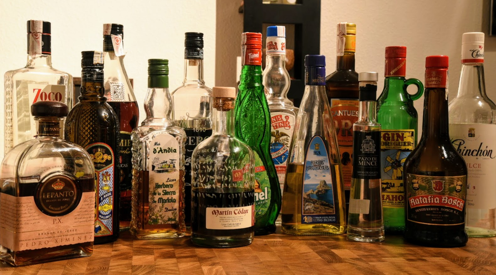

Historia de licores
Históricamente, los licores derivan de las hierbas medicinales, generalmente preparadas por monjes, como los benedictinos. Los licores fueron hechos en Italia desde el siglo xiii.

Históricamente, los licores derivan de las hierbas medicinales, generalmente preparadas por monjes, como los benedictinos. Los licores fueron hechos en Italia desde el siglo xiii.
La Revolución Industrial introdujo técnicas de producción en masa, lo que hizo que los licores fueran más accesibles para el público en general y pasaron de ser elaborados en pequeños lotes para uso personal a ser producidos a mayor escala con fines comerciales.
Los tres métodos básicos utilizados en la producción de licores para extraer sabores son la percolación, la maceración y la destilación. Los dos primeros métodos son procesos en frío en los que no se aplica calor, mientras que el tercero es similar a la producción de ginebra destilada.